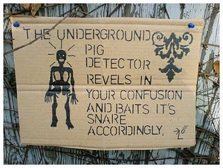

Saturday, January the 8th, 2011
back to: title, date or indexes
As any fule kno, 99.9% of what passes for “art” in this witless age is mere piffle. As a rule of thumb, anything with the Charles Saatchi imprimatur can be safely consigned to the waste chute of history. It is also very probably true that anyone who describes themselves as an “artist” (as opposed to painter, potter, sculptor—emphasising the craft) is actually an idiot. Of course, it is the idiots who are showered with money and kudos.
In a brighter, more sensible world, some of the unknown amateurs tirelessly plying their crafts outwith the public gaze would be our stars. But then, perhaps it is because they are unknown and amateur and ploughing their own lonely furrows that their work is valuable.
All by way of preamble to egging you to delight in Outa_Spaceman's latest project. Thus far, seven signs in seven days, marvellously enlivening his little south coast bailiwick. Saatchi ought to write him a cheque immediately—ah, but OSM didn't go to Goldsmiths, and he doesn't live in Hoxton, and he isn't a wanker, so he must continue to ply his craft in obscurity. But we can celebrate it.

ADDENDUM : Some readers, seeing the heading “Art”, will have supposed this postage to be devoted to Mr Garfunkel, singer, poet, pedestrian and polymath. But according to his own website, he is known not as “Art”, nor even as “Mr Garfunkel”, but as “The G”.